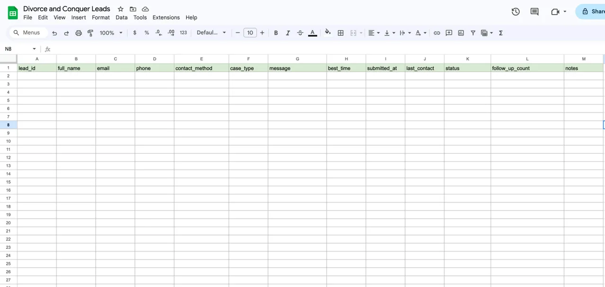

Cada lead ignorado es dinero perdido. Usa n8n e IA para responder automáticamente, registrar leads en Google Sheets y hacer seguimiento antes de que se enfríen.

Un requerimiento real de un cliente
Entonces construiste un sitio web. Quizás seguiste mi tutorial anterior donde usamos Claude Code para crear un sitio web de derecho familiar desde cero en 10 minutos. El sitio se ve genial pero el formulario de contacto no hace nada, o quizás ya configuraste una respuesta simple por email.
¿Y ahora qué?
Esto es lo que usualmente pasa: alguien llena tu formulario, los datos se quedan en tu bandeja de entrada, los copias a una hoja de cálculo, escribes una respuesta manualmente, y esperas acordarte de hacer seguimiento la próxima semana. Multiplica eso por 10 leads al día y estarás gastando horas en trabajo repetitivo.
Responder personalmente a cada lead suena genial hasta que lo estás haciendo 15 veces al día. Hay una mejor manera.
Eso es exactamente lo que vamos a construir hoy. Tomaremos ese formulario de contacto del sitio web del bufete de abogados y lo conectaremos a n8n e IA para que maneje la primera respuesta, registre todo en un CRM, notifique a tu equipo, y haga seguimiento automáticamente si nadie responde. ¡Yo también estoy aprendiendo mientras creo este post! Así que esperemos que eso me obligue a explicar las cosas mejor.
Índice
- Lo que vamos a construir
- Configura tu CRM en Google Sheets
- Crea tu cuenta de n8n
- Construye el Workflow #1: Manejador de Nuevos Leads
- Construye el Workflow #2: Programador de Seguimientos
- Activa tus workflows
- Prueba todo
- Reflexiones finales
Algunas suposiciones
Antes de empezar, asumo que:
- Tienes un sitio web con un formulario de contacto (si no, revisa el tutorial de vibe coding para construir uno)
- Tienes una cuenta de Google para Google Sheets, si no tienes una, crea una aquí.
- Tienes una API key de OpenAI (o usarás la IA integrada de n8n)
Lo que vamos a construir
Vamos a construir dos workflows que trabajan juntos:
Workflow 1: Manejador de Nuevos Leads
Se ejecuta cada vez que alguien envía tu formulario de contacto.
- Su información va directo a Google Sheets (tu CRM)
- Tu equipo recibe una notificación por email
- La IA escribe una respuesta personalizada basada en su mensaje
- Esa respuesta se envía al lead automáticamente
- La fecha de "último contacto" se registra
Workflow 2: Programador de Seguimientos
Se ejecuta todos los días a las 9 AM y atrapa leads que se cayeron por las grietas.
- El sistema busca leads que aún están marcados como "Nuevo"
- Si han pasado 7 días sin actualización de estado → envía seguimiento #1
- Si han pasado 14 días sin actualización de estado → envía seguimiento #2
- Si han pasado 21 días sin actualizaciones de estado → marca como "Muerto"
Tu equipo solo necesita actualizar el estado cuando realmente hablen con alguien. La automatización se encarga del resto.
Paso 1: Configura tu CRM en Google Sheets
Crea una hoja de Google que actuará como tu CRM. Nada elegante, solo una hoja de cálculo con las columnas correctas.
Crea estas columnas en la fila 1:
| Columna | Para qué sirve |
|---|---|
| lead_id | Identificador único (LEAD-001, LEAD-002, etc.) |
| full_name | Del formulario |
| Del formulario | |
| phone | Del formulario |
| contact_method | Su preferencia (email o teléfono) |
| case_type | Divorcio, Custodia, Pensión alimenticia, etc. |
| message | Lo que escribieron |
| best_time | Cuándo llamarlos |
| submitted_at | Cuándo llenaron el formulario |
| last_contact | Fecha del último contacto |
| status | New → Contacted → Converted / Dead |
| follow_up_count | Cuántos seguimientos automáticos enviados (0, 1, 2) |
| notes | Notas manuales de tu equipo |
Descarga la plantilla leads.xlsx que puedes subir a Google Sheets.
Ese es todo tu CRM. Simple.

Paso 2: Crea tu cuenta de n8n
Ve a n8n.io y crea una cuenta. El nivel gratuito en la nube te da 2,500 ejecuciones de workflow por mes, suficiente para empezar y probar todo.
Una vez dentro, verás un lienzo vacío. Aquí es donde sucede la magia.
También puedes auto-hospedar n8n si quieres más control, pero para este tutorial la versión en la nube funciona muy bien.
Paso 3: Construye el Workflow #1: Manejador de Nuevos Leads
Crea un nuevo workflow en n8n y nómbralo "Manejador de Nuevos Leads" o como quieras. Esto es lo que vamos a construir:
Webhook → Set Fields → Google Sheets (append) → Send Notification → OpenAI → Send Email → Google Sheets (update)
Vamos nodo por nodo.
3.1 Nodo Webhook
Esto crea una URL a la que tu formulario enviará datos. Haz clic en el botón + y busca "Webhook".
Configura el método HTTP como POST. Verás dos URLs: una URL de Producción y una URL de Prueba. Copia la URL de Producción y guárdala en algún lugar—la necesitarás después cuando conectes tu formulario de verdad. También copia la URL de Prueba, usaremos esa primero para capturar los datos del formulario antes de construir el resto del workflow.
Antes de continuar, probemos el webhook. Puedes saber que es la URL de prueba porque tiene "test" en la ruta. Reemplaza la llamada API simulada en tu contact.js con esto:
// Get form values
const formData = {
fullName: document.getElementById('fullName').value.trim(),
email: document.getElementById('email').value.trim(),
phone: document.getElementById('phone').value,
contactMethod: document.querySelector('input[name="contactMethod"]:checked').value,
caseType: document.getElementById('caseType').value,
message: document.getElementById('message').value.trim(),
bestTime: document.getElementById('bestTime').value,
timestamp: new Date().toISOString()
};
// Show loading state
window.formUtils.setLoadingState(submitBtn, true);
fetch('https://stevenpotts.app.n8n.cloud/webhook-test/8cd0b9f0-9382-4c18-aa7f-2609ae735e49', {
method: 'POST',
headers: { 'Content-Type': 'application/json' },
body: JSON.stringify(formData)
})
.then(response => {
if (response.ok) {
// Hide loading state
window.formUtils.setLoadingState(submitBtn, false);
// Show success message
successMessage.style.display = 'block';
// Hide form
form.querySelectorAll('.form-group').forEach(group => {
group.style.display = 'none';
});
submitBtn.style.display = 'none';
// Scroll to success message
successMessage.scrollIntoView({ behavior: 'smooth', block: 'nearest' });
// Show alert
window.formUtils.showAlert('Your message has been sent successfully!', 'success');
}
})
.catch(error => {
console.error('Error:', error);
window.formUtils.setLoadingState(submitBtn, false);
window.formUtils.showAlert('Something went wrong. Please try again.', 'error');
});
Haz clic en "Listen for test event" o el Botón de Play en el nodo webhook en n8n, luego envía el formulario en tu sitio web. El webhook debería capturar los datos y verás todos los campos aparecer en n8n. ESTO ES MUY IMPORTANTE para que puedas probar cada paso en el Workflow de n8n.
3.2 Nodo Set
Esto limpia los datos entrantes y agrega campos que necesitamos. Busca "Set" y agrega estos campos:
- name:
lead_idvalue:LEAD-{{$now.format('yyyyMMddHHmmss')}} - name:
statusvalue:New - name:
follow_up_countvalue:0 - name:
last_contactvalue:{{$now.format('yyyy-MM-dd')}} - name:
submitted_atvalue:{{$now.toISO()}}
3.3 Nodo Google Sheets (agregar)
Conecta tu cuenta de Google y selecciona tu hoja de cálculo CRM. Configura la operación como "Append Row" y mapea todos los campos del nodo Set a las columnas correctas. Puedes ver cómo en el panel izquierdo veo todos los datos fluyendo a través del Workflow de n8n, puedo arrastrar y soltar los valores donde quiera, estamos usando datos del Nodo Set y del Nodo Webhook.
3.4 Nodo Email
Agrega un nodo de Email para notificar a tu equipo cuando llegue un nuevo lead. Si usas Google como en el ejemplo, tendrás que conectar tu cuenta de Google. Asegúrate de escribir el email correcto de la persona que necesita ser notificada cuando se envíe un nuevo formulario, en este caso usé stevenpottsb@gmail.com.
Usa un mensaje como:
🆕 Nuevo lead: {{$json.full_name}}
Tipo de caso: {{$json.case_type}}
Mensaje: {{$json.message}}
Preferencia de contacto: {{$json.contact_method}}
Pero reemplaza las variables con los datos correctos del webhook como se muestra en el video.
3.5 Nodo OpenAI
Aquí es donde se pone divertido. Agrega un nodo de OpenAI y configura la operación como "Message a Model". Puedes revisar cómo obtener tu api key de OpenAI aquí Cómo Obtener Tu Propia API Key de OpenAI.
Usa un prompt como este:
You are a helpful assistant for Divorce and Conquer, a family law firm. Write a warm, professional email to {{$json.full_name}} acknowledging their inquiry about {{$json.case_type}}.
Their message: "{{$json.message}}"
Preferred contact method: {{$json.contact_method}}
Best time to reach them: {{$json.best_time}}
Include:
- Thank them for reaching out
- Briefly acknowledge their situation with empathy (divorce is hard)
- Let them know a team member will contact them soon via their preferred method
- Mention the office phone for urgent matters: 555-123-4567
Keep it under 150 words. Sign off as "The Divorce and Conquer Team". Just write the body of the email.
Asegúrate de reemplazar las variables arrastrando desde los valores recibidos del Webhook en el panel izquierdo. La IA genera una respuesta personalizada basada en lo que realmente escribieron. Alguien preguntando sobre custodia recibe un tono diferente que alguien preguntando sobre división de bienes.
Intenta hacer clic en 'Execute Step', si no te deja porque no tienes datos, entonces ejecuta los pasos anteriores.
3.6 Nodo Email
Agrega un nodo "Send Email". Configura el destinatario como la dirección de email del lead y el cuerpo como la salida de la IA del nodo anterior.
Paso 4: Construye el Workflow #2: Programador de Seguimientos
Crea un segundo workflow llamado "Programador de Seguimientos". Este se ejecuta diariamente y atrapa leads que se cayeron por las grietas.
Esta es la estructura:
Schedule Trigger → Google Sheets (read) → Filter → Code → Switch → [OpenAI → Email → Google Sheets (update)] por rama
Crea un nodo Trigger y configúralo para ejecutarse diariamente a las 9 AM (o cuando tenga sentido para tu negocio).
4.1 Nodo Google Sheets (leer)
Agrega un nodo de Google Sheets configurado como "Read Rows". Trae todo de tu hoja de cálculo CRM. Agrega un Filtro al Nodo para que solo obtengas registros con estado 'New', lo que significa registros que tu equipo no ha actualizado manualmente y que no están 'Dead'.
4.2 Nodo Code
Agrega un nodo Code para calcular cuántos días han pasado desde el último contacto:
return $input.all().map(item => {
const today = new Date();
// Use bracket notation
const lastContact = new Date(item.json['last_contact']);
// Use .getTime() for math
const daysSinceContact = Math.floor((today.getTime() - lastContact.getTime()) / (1000 * 60 * 60 * 24));
return {
json: {
...item.json,
days_since_contact: daysSinceContact
}
};
});
Asegúrate de seleccionar 'Run Once for All Items' en el campo 'Mode' y el lenguaje es 'Javascript'.
4.3 Nodo Switch
Agrega un nodo Switch con tres ramas basadas en tiempo. Agrega 3 Reglas de Enrutamiento y cuando hagas clic en el campo, selecciona 'Expression' y copia y pega las siguientes condiciones. También asegúrate de seleccionar 'Boolean' -> is true para cada regla.
Rama #1 (7 días):
- Condición:
{{ $json.days_since_contact >= 7 && $json.days_since_contact < 14 && $json.follow_up_count == 0 }}
Rama #2 (14 días):
- Condición:
{{ $json.days_since_contact >= 14 && $json.days_since_contact < 21 && $json.follow_up_count == 1 }}
Rama #3 (21 días):
- Condición:
{{ $json.days_since_contact >= 21 }}
4.4 Nodos OpenAI (Rama #1 y Rama #2)
Cada rama necesita su propio nodo OpenAI con un prompt diferente.
Rama #1 (7 días): Nodo prompt de OpenAI:
Write a friendly follow-up email to {{$json.full_name}} who inquired about {{$json.case_type}} a week ago.
Ask if they had any questions or would like to schedule a consultation.
Keep it brief and helpful, not pushy.
Rama #2 (14 días): Nodo prompt de OpenAI:
Write a final follow-up email to {{$json.full_name}} about their {{$json.case_type}} inquiry from two weeks ago.
Let them know you're still available if their situation has changed.
Mention this is your last follow-up but they're welcome to reach out anytime.
Keep it warm and respectful.
Asegúrate de reemplazar las variables con los valores correctos arrastrándolos desde el panel izquierdo como puedes ver en el video.
4.5 Nodos Email (Rama #1 y Rama #2)
Después de cada nodo OpenAI, agrega un nodo Email para enviar el seguimiento.
Para probar la primera ruta, cambié manualmente la fecha 'last_contact' en mi Google Sheet para que sea más de 7 días atrás pero menos de 14 días, luego tuve que ejecutar los nodos anteriores para poder obtener los datos para agregarlos al nodo de email. Hice esto para ambos nodos de email.
Para el segundo, en realidad volví al 'nodo Sheet' para obtener los datos porque no había actualizado el 'follow_up_count'. Esperemos que el video lo aclare.
4.6 Nodos Google Sheets (Rama #1 y Rama #2 y Rama #3)
Después de enviar cada seguimiento, actualiza la fila, harás coincidir la fila en la columna lead_id y arrastra 'lead_id' desde Sheets en el panel izquierdo.
Rama #1 (7 días):
- Configura
follow_up_counta 1 - Actualiza
last_contacta{{$now.format('yyyy-MM-dd')}}
Rama #2 (14 días):
- Configura
follow_up_counta 2 - Actualiza
last_contacta{{$now.format('yyyy-MM-dd')}}
Rama #3 (21 días):
- Configura
statusa "Dead" a{{$now.format('yyyy-MM-dd')}}
Paso 5: Activa tus workflows
Ahora puedes activar ambos workflows y cambiar el webhook a la URL de Producción que guardaste antes.
Reemplaza la URL de prueba en tu contact.js con la de producción:
// Get form values
const formData = {
fullName: document.getElementById('fullName').value.trim(),
email: document.getElementById('email').value.trim(),
phone: document.getElementById('phone').value,
contactMethod: document.querySelector('input[name="contactMethod"]:checked').value,
caseType: document.getElementById('caseType').value,
message: document.getElementById('message').value.trim(),
bestTime: document.getElementById('bestTime').value,
timestamp: new Date().toISOString()
};
// Show loading state
window.formUtils.setLoadingState(submitBtn, true);
fetch('https://stevenpotts.app.n8n.cloud/webhook/8cd0b9f0-9382-4c18-aa7f-2609ae735e49', {
method: 'POST',
headers: { 'Content-Type': 'application/json' },
body: JSON.stringify(formData)
})
.then(response => {
if (response.ok) {
// Hide loading state
window.formUtils.setLoadingState(submitBtn, false);
// Show success message
successMessage.style.display = 'block';
// Hide form
form.querySelectorAll('.form-group').forEach(group => {
group.style.display = 'none';
});
submitBtn.style.display = 'none';
// Scroll to success message
successMessage.scrollIntoView({ behavior: 'smooth', block: 'nearest' });
// Show alert
window.formUtils.showAlert('Your message has been sent successfully!', 'success');
}
})
.catch(error => {
console.error('Error:', error);
window.formUtils.setLoadingState(submitBtn, false);
window.formUtils.showAlert('Something went wrong. Please try again.', 'error');
});
Nota que la URL ya no tiene "test" en la ruta—ese es tu webhook de producción.
Vuelve a desplegar tu sitio y estás en vivo. En el video estoy usando Cloudflare Pages, la misma configuración del tutorial de vibe coding.
Paso 6: Prueba todo
Antes de ir a producción, prueba el flujo completo:
Prueba Workflow 1:
- Envía una entrada de prueba del formulario
- Verifica que aparezca en Google Sheets con estado "New"
- Verifica que recibiste la notificación de Slack
- Verifica que el email de IA se envió al lead
Aquí hay una prueba exitosa para el primer workflow. Estoy enviando los emails desde mi cuenta de Gmail conectada 'sdpotts93@gmail.com', configuré el email del stakeholder como 'stevenpottsb@gmail.com' y el email del lead también era 'stevenpottsb@gmail.com'.
Eso significa que todos los emails enviados se envían desde 'sdpotts93@gmail.com' y todos los emails serán recibidos por 'stevenpottsb@gmail.com'.
Prueba Workflow 2:
- Cambia manualmente
last_contacta 8 días atrás en la hoja - Ejecuta el workflow de seguimiento manualmente
- Verifica que el primer email de seguimiento se envió y
follow_up_countse actualizó a 1
Una vez que todo funcione, activa ambos workflows y déjalos correr.
De hecho probé las tres ramas abajo y se ejecutaron exitosamente.
Reflexiones finales
Esta configuración me tomó aproximadamente una hora la primera vez. El ahorro de tiempo se acumula rápido cuando no estás copiando datos manualmente ni escribiendo los mismos emails de "gracias por contactarnos" una y otra vez.
Algunas cosas a considerar:
Tu equipo sigue siendo importante. La automatización maneja las cosas aburridas, pero alguien necesita realmente llamar a estas personas y actualizar el estado. El sistema solo funciona si tu equipo lo usa.
Los emails de IA necesitan ajustes. Las primeras salidas pueden sonar genéricas. Ajusta tus prompts basándote en resultados reales. Agrega ejemplos de buenas respuestas. Entre más específico seas, mejor se pone.
Empieza simple. Te mostré un sistema completo aquí, pero podrías empezar solo con la parte de webhook → sheets → notificación. Agrega emails de IA después. Agrega seguimientos después de eso. Itera.
Cuidado con los casos extremos. ¿Qué pasa si alguien envía el formulario dos veces? ¿Qué pasa si el email rebota? Construye salvaguardas mientras descubres problemas.
El objetivo no es reemplazar la conexión humana. Es asegurarse de que ningún lead se pierda mientras tu equipo se enfoca en las conversaciones que realmente importan.
Espero que esto haya sido útil. Puedes contactarme si tienes alguna pregunta.